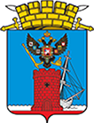

Феодосия
Панорамы улиц на карте Феодосии — Яндекс Карты
Феодосия — город в Крыму, расположенный в юго-восточной части Крымского полуострова на побережье Чёрного моря. Административный центр городского округа Феодосия.

К карте
Информация